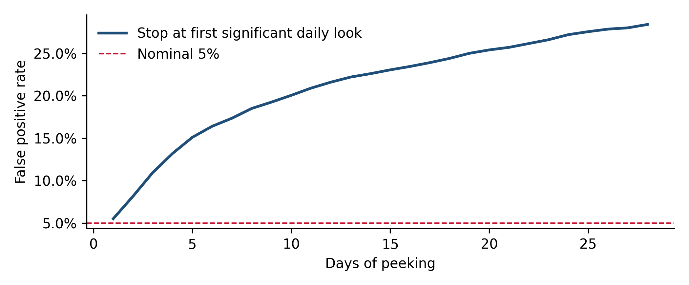

Chapter 5 A/B tests that hold up
Whether a change (a page, an offer, a message, an onboarding step) improved the outcome enough to ship, and how to design the test so that the answer is trustworthy whichever way it comes out.
5.1 Design before data
An A/B test is the strongest evidence in marketing science because randomization breaks every confounding path at once. It is also the easiest to ruin, because every decision made after the data starts arriving is a chance to fool yourself. The fix is to write the design down before launch. A one-page test plan should fix:
| Element | What to decide | Common mistake |
|---|---|---|
| Hypothesis | What change, for whom, expected direction and mechanism | “Let’s see what happens” |
| Randomization unit | User, account, session, device, household | Randomizing sessions when the outcome is per user |
| Primary metric | One metric that decides the test, defined precisely, with its window | Picking the metric that moved after the fact |
| Guardrail metrics | Metrics that must not get worse (e.g. activation, complaints, unsubscribes) | No guardrails, so a “win” damages something downstream |
| Minimum detectable effect | The smallest effect worth acting on | Not computing it, then calling a null result “a small positive lift” |
| Sample size and duration | From the MDE, baseline rate and traffic; whole weeks | Stopping when it “looks significant” |
| Decision rule | What result leads to ship, iterate or stop | Deciding the rule after seeing the result |
| Segments | Which cuts will be examined, declared in advance | Slicing until something is significant |
The plan does not have to be long. It has to exist before the data does.
5.2 Power and the minimum detectable effect
The minimum detectable effect (MDE) is the smallest true effect the test has a good chance (usually 80%) of detecting at the chosen significance level. It is the single most useful number in test planning, because it tells you in advance what a null result will mean.
For a conversion rate \(p\) and \(n\) users per arm, a good approximation of the relative MDE for a two-sided test at level \(\alpha\) with power \(1-\beta\) is
\[ \text{MDE}_{\text{rel}} \approx \frac{(z_{1-\alpha/2} + z_{1-\beta})\sqrt{2p(1-p)/n}}{p}. \]
import numpy as np
import pandas as pd
from scipy import stats
def rel_mde(p, n, alpha=0.05, power=0.8):
z = stats.norm.ppf(1 - alpha / 2) + stats.norm.ppf(power)
return z * np.sqrt(2 * p * (1 - p) / n) / p
ns = [5_000, 10_000, 25_000, 50_000, 100_000, 250_000]
tbl = pd.DataFrame({f"baseline {p:.0%}": [rel_mde(p, n) for n in ns] for p in [0.01, 0.03, 0.10]},
index=pd.Index(ns, name="users per arm"))
print((tbl * 100).round(1).astype(str).add("%").to_string())## baseline 1% baseline 3% baseline 10%
## users per arm
## 5000 55.8% 31.9% 16.8%
## 10000 39.4% 22.5% 11.9%
## 25000 24.9% 14.2% 7.5%
## 50000 17.6% 10.1% 5.3%
## 100000 12.5% 7.1% 3.8%
## 250000 7.9% 4.5% 2.4%Read the table before running any test. With 10,000 users per arm and a 3% baseline, the test can only reliably detect a relative lift of roughly 20% or more. Most real changes to a landing page move conversion by a few percent. Such a test is almost guaranteed to come back null, and when it does, the honest summary is “we could not detect an effect; effects smaller than about 20% were undetectable with this sample”, not “no effect”.
Three levers improve the MDE, in roughly increasing order of usefulness:
- More traffic or a longer test. The MDE shrinks with the square root of the sample, so halving it takes four times the data.
- A metric closer to the change. A change to the pricing page is easier to detect on “started sign-up” than on “first payment 60 days later”, although the closer metric may not be the one you ultimately care about.
- Variance reduction (CUPED, below), which is often worth the equivalent of 20% to 50% more traffic for free.
5.3 Peeking: the most common way to ruin a test
A fixed-sample test controls the false positive rate at 5% only if you look at the result once, at the planned end. If you check every day and stop as soon as the result is significant, the false positive rate climbs far above 5%. The simulation below runs 2,000 A/A tests, where there is no true difference, for 28 days and checks significance each day.
import matplotlib.pyplot as plt
rng = np.random.default_rng(1)
sims, days, per_day, p = 2_000, 28, 500, 0.03
a = rng.binomial(per_day, p, (sims, days)).cumsum(1)
b = rng.binomial(per_day, p, (sims, days)).cumsum(1)
n = per_day * np.arange(1, days + 1)
pooled = (a + b) / (2 * n)
z = (b / n - a / n) / np.sqrt(pooled * (1 - pooled) * 2 / n)
daily_sig = np.abs(z) > 1.96
fp_by_day = np.maximum.accumulate(daily_sig, axis=1).mean(0) # stopped at first "win"
# Group sequential: 4 planned looks with O'Brien-Fleming boundaries
looks = np.array([7, 14, 21, 28]) - 1
bounds = 2.024 * np.sqrt(4 / np.arange(1, 5))
fp_gs = (np.abs(z[:, looks]) > bounds).any(1).mean()
print(f"Single look at day 28: {daily_sig[:, -1].mean():.1%}")## Single look at day 28: 5.5%## Daily peeking for 28 days: 28.4%## 4 planned looks, OBF bounds: 5.7%fig, ax = plt.subplots(figsize=(7, 2.9))
ax.plot(np.arange(1, days + 1), fp_by_day, lw=2, label="Stop at first significant daily look")
ax.axhline(0.05, color="#C8102E", ls="--", lw=1, label="Nominal 5%")
ax.set_xlabel("Days of peeking"); ax.set_ylabel("False positive rate")
ax.yaxis.set_major_formatter(plt.matplotlib.ticker.PercentFormatter(1))
ax.legend(loc="upper left")
plt.tight_layout()
plt.show()
Figure 5.1: False positive rate of A/A tests when stopping at the first significant daily look, compared with a single look at the end and with a four-look group sequential design.
Daily peeking for four weeks turns a 5% false positive rate into something close to 30%: more than one in four “winning” tests is noise. The four-look group sequential design stays close to the nominal 5%. There are two honest fixes.
- Do not peek at the decision metric. Look at guardrails and data quality during the test, but decide only at the planned end.
- Plan the peeks. Group sequential designs fix a small number of interim looks in advance and use stricter thresholds at the early ones. O’Brien-Fleming boundaries, used above, demand very strong evidence early and close to the usual threshold at the end, which keeps the overall error near 5% while still allowing an early stop for a large effect. Always-valid inference (mixture sequential tests) goes further and allows continuous monitoring, at some cost in power.
If someone asks for an interim look at a fixed-sample test, give it, but say plainly that a significant interim result is not a reason to stop early under that design.
5.4 Multiple comparisons
Every extra comparison is another chance for noise to look like a finding. If a test is read on one primary metric, three secondary metrics and five countries, that is up to 20 comparisons, and at a 5% threshold you should expect about one false positive even if nothing works.
k = np.array([1, 3, 5, 10, 20, 50])
print(pd.DataFrame({"comparisons": k,
"P(at least one false positive)": (1 - 0.95 ** k).round(2)}).to_string(index=False))## comparisons P(at least one false positive)
## 1 0.05
## 3 0.14
## 5 0.23
## 10 0.40
## 20 0.64
## 50 0.92Practical rules:
- One primary metric decides. Everything else is supporting evidence or a guardrail.
- Declare segments in advance and correct for them. Holm’s method controls the chance of any false positive; the Benjamini-Hochberg procedure controls the share of false discoveries and is less conservative. Both are one line with
statsmodels.stats.multitest.multipletests. - Treat unplanned segment findings as hypotheses for the next test, not as results. “The variant worked in Italy only” found after the fact is far more often noise than a real interaction.
5.5 Variance reduction with CUPED
CUPED (controlled-experiment using pre-experiment data) uses a pre-period measure of the same metric to remove predictable variation from the outcome. If \(X\) is a user’s pre-period value and \(Y\) the in-test outcome, analyze \(Y - \theta(X - \bar X)\) with \(\theta = \text{cov}(X, Y)/\text{var}(X)\). Because \(X\) is measured before randomization, the adjustment cannot bias the estimate; it only shrinks the variance, by a factor of \(1 - \rho^2\) where \(\rho\) is the correlation between \(X\) and \(Y\).
rng = np.random.default_rng(8)
n = 20_000
pre = rng.gamma(2, 25, n) # pre-period spend per user
treat = rng.random(n) < 0.5
post = 0.7 * pre + rng.gamma(2, 12, n) + 2.0 * treat # true effect: +2.0 per user
theta = np.cov(pre, post)[0, 1] / pre.var()
adj = post - theta * (pre - pre.mean())
for name, y in [("Raw", post), ("CUPED", adj)]:
d = y[treat].mean() - y[~treat].mean()
se = np.sqrt(y[treat].var() / treat.sum() + y[~treat].var() / (~treat).sum())
print(f"{name:6s} effect {d:5.2f} 95% CI [{d - 1.96*se:5.2f}, {d + 1.96*se:5.2f}] SE {se:.3f}")## Raw effect 3.25 95% CI [ 2.42, 4.08] SE 0.423
## CUPED effect 2.37 95% CI [ 1.90, 2.84] SE 0.242## Correlation pre/post: 0.82Two things happen. The CUPED standard error is a bit over half the raw one, which is equivalent to running the raw test with about three times the traffic. And the point estimate moves: in this particular sample the treatment arm happened to contain heavier spenders before the test started, which inflated the raw estimate well above the true 2.0. CUPED corrects for that chance imbalance and lands much closer to the truth. Randomization guarantees balance on average, not in every sample; CUPED fixes the sample you actually got. CUPED works best for metrics with stable individual behavior (spend, sessions, transactions) and does nothing for brand-new users with no history, which is a real limitation for acquisition tests.
5.6 Checks that catch broken tests
Sample ratio mismatch (SRM). If the design splits traffic 50/50, the observed split should be close to 50/50. A significant deviation means something is wrong with assignment or logging (redirects that drop users, bot filtering applied to one arm, a variant that crashes on some browsers), and the result cannot be trusted whatever it shows.
observed = np.array([50_600, 49_400])
chi2, p = stats.chisquare(observed)
print(f"Split {observed[0] / observed.sum():.2%} / {observed[1] / observed.sum():.2%}: SRM p-value = {p:.5f}")## Split 50.60% / 49.40%: SRM p-value = 0.00015A 50.6/49.4 split looks harmless but is very unlikely by chance at this sample size. Investigate before reading the outcome.
A/A tests. Running the testing setup with two identical arms is the cheapest way to verify that randomization, logging and analysis produce about 5% false positives. Run one whenever the tooling changes.
Novelty and learning effects. A new design can win for two weeks because it is new, or lose for two weeks because users have to relearn something. Plot the daily effect; if it trends, the end-of-test average does not describe the long-run effect.
Interference. If treated and control users interact (referrals, shared accounts, marketplaces, limited inventory), the control is contaminated and the estimate is biased. Randomize at a higher level (company, region) when this matters.
Long outcome windows. Many marketing outcomes (activation, revenue, retention) arrive weeks or months after exposure. A test read at two weeks measures the short-term outcome only. When the decision depends on revenue or retention, define the readout as a cohort metric at a fixed horizon (for example 30, 60 or 90 days after assignment) and plan the timeline around it.
Treating an ad platform’s split test as an incrementality test. A platform A/B test compares two versions of an ad against each other; both arms are still advertising. It tells you which version performs better relative to the other, not whether either one causes conversions that would not have happened anyway. For that you need a holdout (Chapter 8) or a geo test (Chapter 6).
5.7 Tests before the product exists
Some of the most valuable tests happen before anything is built.
- Smoke tests and fake doors present an offer, feature or product that does not exist yet and measure how many people try to take it. They size demand cheaply, at some cost in user trust if overused.
- Shadow brands run a test campaign under an unrelated brand name to measure response to an offer or positioning without exposing the main brand.
- Creative pre-testing with fractional factorial designs (sometimes called Taguchi or orthogonal-array testing) estimates the effect of several creative elements at once with far fewer cells than a full factorial, at the cost of assuming most interactions are small.
5.8 Reporting a test
A readout that survives scrutiny reports, in this order: the decision and how confident it is; the design (unit, split, dates, sample size, primary metric and window); the estimate with its interval; the MDE the test had; guardrails; and any data quality issues found (SRM, logging gaps). A non-significant result is reported as “we could not detect an effect larger than X”, which is a real and useful result.
5.9 Checklist
- Is there a written plan with hypothesis, unit, primary metric and window, MDE, sample size, duration and decision rule, dated before launch?
- Does the MDE correspond to an effect size worth acting on? If not, redesign or do not run the test.
- Does the test run in whole weeks and long enough for the outcome window?
- Was the sample ratio checked, and were A/A tests run on this setup?
- Is the decision metric read only at the planned end, or under a pre-planned sequential design?
- How many comparisons does the readout make, and are they corrected or labeled as exploratory?
- Is a null result reported with the effect size that could have been detected?
5.10 Further reading
- abtest.design. A gallery of real A/B tests, useful for calibrating what effect sizes are realistic.
Full links are in Appendix A.